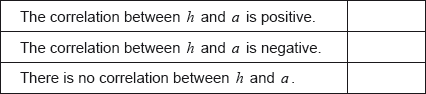

| Date | November 2021 | Marks available | 2 | Reference code | 21N.1.AHL.TZ0.12 |
| Level | Additional Higher Level | Paper | Paper 1 | Time zone | Time zone 0 |
| Command term | Find | Question number | 12 | Adapted from | N/A |
Question
The following table shows the time, in days, from December and the percentage of Christmas trees in stock at a shop on the beginning of that day.
![]()
The following table shows the natural logarithm of both and on these days to decimal places.
![]()
Use the data in the second table to find the value of and the value of for the regression line, .
Assuming that the model found in part (a) remains valid, estimate the percentage of trees in stock when .
Markscheme
A1A1
[2 marks]
M1
(A1)
A1
[3 marks]
Examiners report
Those candidates who did this question were often successful. There were a number, however, who found an equation of a line through two of the points instead of using their technology to find the equation of the regression line. A common problem was to introduce rounding errors at various stages throughout the problem. Some candidates failed to find the value of from that of .
Those candidates who did this question were often successful. There were a number, however, who found an equation of a line through two of the points instead of using their technology to find the equation of the regression line. A common problem was to introduce rounding errors at various stages throughout the problem. Some candidates failed to find the value of from that of .
Syllabus sections
-
18N.2.SL.TZ0.T_1a.iii:
Use your graphic display calculator to write down r , Pearson’s product–moment correlation coefficient.
-
18N.2.SL.TZ0.T_1c.i:
Use the regression line y on x to estimate Jerome’s examination score.
-
19M.2.SL.TZ1.T_1d.ii:
Hence describe the correlation between temperature difference from 37 °C and heartbeat.
-
22M.3.AHL.TZ1.1a.ii:
Write down the value of , Pearson’s product-moment correlation coefficient.
-
22M.2.SL.TZ1.3c:
State whether it would be appropriate for Chester to use the equation of a regression line for on to predict a country’s Eurovision score. Justify your answer.
-
17M.2.SL.TZ1.T_1b.ii:
For the data from these seven species describe the correlation between the average body weight and the average weight of the brain.
-
18M.1.SL.TZ2.T_1c:
Using your line of best fit, estimate the physics test score for a student with a score of 20 in their mathematics test.
-
19N.1.SL.TZ0.T_6c:
Explain why it is valid to use the regression equation to estimate the airfare between Hong Kong and Tokyo.
-
18N.2.SL.TZ0.T_1b.i:
Find the exact value of m and of c for these data.
-
22M.2.AHL.TZ2.4e.i:
.
It is not required to state units for this value.
-
19M.2.SL.TZ1.T_1d.i:
Use your graphic display calculator to find the Pearson’s product–moment correlation coefficient, .
-
22M.3.AHL.TZ1.1f.i:
Use linear regression to estimate the value of and of .
-
22M.2.AHL.TZ2.4e.ii:
.
It is not required to state units for this value.
-
18M.2.SL.TZ1.S_8a:
Find the value of a and of b.
-
21M.3.AHL.TZ2.1c.ii:
Determine the value of , Pearson’s product-moment correlation coefficient, for these remaining responses.
-
17M.2.SL.TZ1.T_1d:
Use your regression line to estimate the average weight of the brain of grey wolves.
-
21N.1.SL.TZ0.1a:
For this data, find the value of the Pearson’s product-moment correlation coefficient, .
-
22M.3.AHL.TZ1.1a.i:
Find the equation of the regression line of on .
-
18N.2.SL.TZ0.T_1a.ii:
Use your graphic display calculator to write down , the mean examination score.
-
18N.3.AHL.TZ0.Hsp_3b.i:
State the distribution of your test statistic, including the parameter.
-
18M.2.SL.TZ2.S_1a.ii:
Write down the correlation coefficient.
-
17M.1.SL.TZ1.S_4a.i:
Write down the independent variable.
-
17M.1.SL.TZ1.S_4a.ii:
Write down the boiling temperature of the liquid.
-
16N.2.SL.TZ0.T_1h:
Write down a reason why this estimate is not reliable.
-
18M.1.SL.TZ1.T_4b:
Using the equation of the regression line, estimate the concentration of dissolved oxygen in the river when the temperature is 18 °C.
-
17N.1.SL.TZ0.T_5a:
Find the mean number of hours that the people surveyed watch television per week.
-
17N.1.SL.TZ0.T_5c:
By placing a tick (✔) in the correct box, determine which of the following statements is true:

-
18M.1.SL.TZ2.T_1a:
Plot and label the point M on the scatter diagram.
-
19M.2.SL.TZ2.S_1a.ii:
Find the correlation coefficient.
-
18N.3.AHL.TZ0.Hsp_3c.iii:
State the p-value and interpret it in this context.
-
18M.1.SL.TZ1.T_4a.ii:
For these data, find the equation of the regression line y on x.
-
SPM.2.SL.TZ0.3f:
The Commissioner believes Minsun’s score for competitor G is too high and so decreases the score from 9.5 to 9.1.
Explain why the value of the Spearman’s rank correlation coefficient does not change.
-
18M.2.SL.TZ2.S_1b:
Use your equation to estimate the mean weight of a child that is 1.95 years old.
-
17M.2.SL.TZ2.S_2b:
Use the regression equation to estimate the number of visitors on a day when the maximum temperature is 15 °C.
-
17N.2.SL.TZ0.S_8c:
Write down the number of low production hives.
-
17M.2.SL.TZ2.T_3b.i:
Write down, for this set of data the mean number of folders produced, ;
-
19M.2.SL.TZ1.T_1b.ii:
Write down, for this set of data the mean number of heartbeats per minute, .
-
19M.2.SL.TZ1.T_1f:
Draw the regression line on on the scatter diagram.
-
17M.2.SL.TZ1.T_1a:
Find the range of the average body weights for these seven species of mammal.
-
EXM.1.AHL.TZ0.15a:
Show that .
-
17N.1.SL.TZ0.T_5d:
Diogo is 18 years old. Give a reason why the regression line should not be used to estimate the number of hours Diogo watches television per week.
-
18M.1.SL.TZ1.T_4a.i:
For these data, find Pearson’s product-moment correlation coefficient, r.
-
18M.2.SL.TZ2.S_1a.i:
Find the value of a and of b.
-
16N.2.SL.TZ0.T_1f:
Draw the regression line, from part (e), on your scatter diagram.
-
SPM.2.SL.TZ0.3a.ii:
Using the value of , interpret the relationship between Stan’s score and Minsun’s score.
-
SPM.2.SL.TZ0.3d:
Copy and complete the information in the following table.
![]()
-
SPM.2.SL.TZ0.3c.ii:
State whether this estimate is reliable. Justify your answer.
-
17M.2.SL.TZ1.T_1b.i:
For the data from these seven species calculate , the Pearson’s product–moment correlation coefficient;
-
SPM.2.SL.TZ0.3e.ii:
Comment on the result obtained for .
-
18M.2.SL.TZ1.S_8b:
Use the regression equation to estimate the value of y when x = 3.57.
-
SPM.2.SL.TZ0.3c.i:
Use your regression equation from part (b) to estimate Minsun’s score when Stan awards a perfect 10.
-
SPM.2.SL.TZ0.3e.i:
Find the value of the Spearman’s rank correlation coefficient, .
-
17M.2.SL.TZ2.S_2a.ii:
Write down the value of .
-
17N.2.SL.TZ0.S_8e:
Adam decides to increase the number of bees in each low production hive. Research suggests that there is a probability of 0.75 that a low production hive becomes a regular production hive. Calculate the probability that 30 low production hives become regular production hives.
-
19M.2.SL.TZ1.T_1c:
Plot and label the point M(, ) on the scatter diagram.
-
18N.3.AHL.TZ0.Hsp_3c.i:
State suitable hypotheses for the test.
-
17M.2.SL.TZ2.S_2a.i:
Find the value of and of .
-
17M.1.SL.TZ1.S_4b:
Jim describes the correlation as very strong. Circle the value below which best represents the correlation coefficient.
-
17M.1.SL.TZ1.S_4c:
Jim’s model is , for . Use his model to predict the decrease in temperature for any 2 minute interval.
-
19M.2.SL.TZ2.S_1b:
Use the regression equation to estimate the BMI of an adult man whose waist size is 95 cm.
-
18N.2.SL.TZ0.S_2b:
Another athlete on this sports team has a hand length of 21.5 cm. Use the regression equation to estimate the height of this athlete.
-
17N.2.SL.TZ0.S_8a:
Write down the value of and of .
-
SPM.2.SL.TZ0.3b:
Write down the equation of the regression line on .
-
EXM.1.AHL.TZ0.15c.ii:
predict the temperature of the metal rod after 3 minutes.
-
18M.1.SL.TZ2.T_1b:
Draw the line of best fit, by eye, on the scatter diagram.
-
17N.2.SL.TZ0.S_8d.i:
Find the value of ;
-
17N.2.SL.TZ0.S_8b:
Use this regression line to estimate the monthly honey production from a hive that has 270 bees.
-
19N.3.AHL.TZ0.Hsp_1a.ii:
Carry out a suitable test at the 5 % significance level. With reference to the -value, state your conclusion in the context of Peter’s claim.
-
SPM.2.SL.TZ0.3a.i:
Write down the value of the Pearson’s product–moment correlation coefficient, .
-
18N.3.AHL.TZ0.Hsp_3d:
Use an appropriate regression line to estimate the weight of a fish with length 360 mm.
-
16N.2.SL.TZ0.T_1a:
On graph paper, draw a scatter diagram for these data. Use a scale of 2 cm to represent 5 hours on the -axis and 2 cm to represent 10 points on the -axis.
-
17M.2.SL.TZ2.T_3e:
State a reason why the regression line on is appropriate to model the relationship between these variables.
-
21M.3.AHL.TZ2.1c.i:
Calculate the mean annual income for these remaining responses.
-
17M.2.SL.TZ2.T_3g:
Draw the regression line on on the scatter diagram.
-
18N.3.AHL.TZ0.Hsp_3a.i:
Find the probability that a fish from this lake will have a weight of more than 560 grams.
-
17N.2.SL.TZ0.S_8d.ii:
Find the number of hives that have a high production.
-
19N.3.AHL.TZ0.Hsp_1a.i:
State suitable hypotheses and to test Peter’s claim, using a two-tailed test.
-
18N.3.AHL.TZ0.Hsp_3b.iii:
State the conclusion of the test, justifying your answer.
-
19M.2.SL.TZ1.T_1b.i:
Write down, for this set of data the mean temperature difference from 37 °C, .
-
20N.2.SL.TZ0.S_2a.ii:
Write down the correlation coefficient.
-
20N.2.SL.TZ0.S_2b:
Using the regression equation, estimate the number of hot chocolates that Lucy will sell on a day when the maximum temperature is .
-
20N.2.SL.TZ0.T_1a:
On graph paper, draw a scatter diagram to show the results of Don’s investigation. Use a scale of to represent units on the -axis, and to represent units on the -axis.
-
20N.2.SL.TZ0.T_1f:
Don concluded from his investigation: “There is no causation between wind speed and the time to fully charge the robot”.
In the context of the question, briefly explain the meaning of “no causation”.
-
18N.2.SL.TZ0.T_1c.ii:
Justify whether it is valid to use the regression line y on x to estimate Jerome’s examination score.
-
17N.1.SL.TZ0.T_5b:
Draw the regression line on the scatter diagram.
-
20N.2.SL.TZ0.S_2a.i:
Find the value of and of .
-
20N.2.SL.TZ0.T_1b.ii:
Calculate , the mean time to fully charge the robot.
-
16N.2.SL.TZ0.T_1b:
(i) , the mean number of hours spent on social media;
(ii) , the mean number of IB Diploma points.
-
18N.3.AHL.TZ0.Hsp_3c.ii:
Find the product-moment correlation coefficient .
-
18M.2.SL.TZ1.S_8c:
The relationship between x and y can be modelled using the formula y = kxn, where k ≠ 0 , n ≠ 0 , n ≠ 1.
By expressing ln y in terms of ln x, find the value of n and of k.
-
17M.2.SL.TZ2.T_3b.ii:
Write down, for this set of data the mean production cost, .
-
EXN.1.SL.TZ0.8c.i:
Explain why your line should not be used to estimate the value of at which the temperature is .
-
EXN.1.SL.TZ0.8d:
State a more appropriate model for the water temperature in the lake over an extended period of time. You are not expected to calculate any parameters.
-
EXN.1.SL.TZ0.8b:
Use your line to find an estimate for the water temperature on the first day of May.
-
EXN.1.SL.TZ0.8c.ii:
Explain in context why your line should not be used to predict the value for December (month ).
-
EXN.1.AHL.TZ0.12a:
Explain why this graph indicates that is inversely proportional to .
-
EXN.1.AHL.TZ0.12c.i:
Use your answer to part (b) to write down the value of to the nearest integer.
-
17M.2.SL.TZ2.T_3c:
Label the point on the scatter diagram.
-
EXN.2.SL.TZ0.1c:
Which of the correlation coefficients would you recommend is used to assess whether or not there is an association between total number of minutes late and distance from school? Fully justify your answer.
-
EXM.1.AHL.TZ0.15b:
Find the equation of the regression line of on .
-
18N.3.AHL.TZ0.Hsp_3a.ii:
The maximum weight a hand net can hold is 6 kg. Find the probability that a catch of 11 fish can be carried in the hand net.
-
18N.3.AHL.TZ0.Hsp_3b.ii:
Find the p-value for the test.
-
16N.2.SL.TZ0.T_1g:
Use the given equation of the regression line to estimate the number of IB Diploma points that this girl obtained.
-
17M.2.SL.TZ2.T_3h:
Use the equation of the regression line to estimate the least number of folders that the factory needs to sell in a month to exceed its production cost for that month.
-
20N.2.SL.TZ0.T_1b.i:
Calculate , the mean wind speed.
-
20N.2.SL.TZ0.T_1d.i:
Calculate , Pearson’s product–moment correlation coefficient.
-
20N.2.SL.TZ0.T_1d.ii:
Describe the correlation between the wind speed and the time to fully charge the robot.
-
20N.2.SL.TZ0.T_1e.i:
Write down the equation of the regression line on , in the form .
-
19M.2.SL.TZ2.S_1a.i:
Write down the value of and of .
-
16N.2.SL.TZ0.T_1c:
Plot the point on your scatter diagram and label this point M.
-
20N.2.SL.TZ0.T_1e.ii:
Draw this regression line on your scatter diagram.
-
19N.3.AHL.TZ0.Hsp_1b:
Peter uses the regression line of on as and calculates that a student with a Mathematics test score of 73 will have a running time of 101 seconds. Comment on the validity of his calculation.
-
17M.2.SL.TZ1.T_1e:
Find the percentage error in your estimate in part (d).
-
20N.2.SL.TZ0.T_1e.iii:
Hence or otherwise estimate the charging time when the wind speed is .
-
17M.2.SL.TZ1.T_1c:
Write down the equation of the regression line on , in the form .
-
17M.2.SL.TZ2.T_3a:
Draw a scatter diagram for this data. Use a scale of 2 cm for 5000 folders on the horizontal axis and 2 cm for 10 000 Euros on the vertical axis.
-
21M.3.AHL.TZ2.1e.i:
Use Juliet’s data to find the value of and of .
-
21M.2.SL.TZ1.1f:
Find the percentage score calculated by Jason.
-
21M.2.SL.TZ1.1g:
State whether it is valid to use the regression line on for Jason’s estimate. Give a reason for your answer.
-
21M.2.SL.TZ1.1e:
Describe the correlation.
-
19N.1.SL.TZ0.T_6a:
Use your graphic display calculator to find the equation of the regression line on .
-
16N.2.SL.TZ0.T_1e:
Write down the equation of the regression line on for these eight male students.
-
19N.1.SL.TZ0.T_6b:
Use your regression equation to estimate the cost of a flight from Hong Kong to Tokyo with Galois Airways.
-
21M.3.AHL.TZ2.1e.ii:
Interpret, referring to income and happiness, what the value of represents.
-
17M.2.SL.TZ2.T_3f:
Use your graphic display calculator to find the equation of the regression line on .
-
20N.2.SL.TZ0.T_1c:
Plot and label the point on your scatter diagram.
-
EXN.1.SL.TZ0.8a:
Assuming the data follows a linear model for this period, find the regression line of on for the remaining data.
-
EXM.1.AHL.TZ0.15c.i:
find the value of and of .
-
EXN.1.AHL.TZ0.12b:
Find the equation of the least squares regression line of against .
-
EXN.1.AHL.TZ0.12c.ii:
Find an expression for in terms of .
-
21N.1.SL.TZ0.1b:
Comment on your answer to part (a), using the information that Eduardo found.
-
21N.1.AHL.TZ0.12b:
Assuming that the model found in part (a) remains valid, estimate the percentage of trees in stock when .
-
21N.1.SL.TZ0.1c:
Write down the equation of the regression line of on , in the form .
-
21N.1.SL.TZ0.1d:
A 57-year-old male also ran in the race.
Use the equation of the regression line to estimate the time he took to complete the race.
-
21N.3.AHL.TZ0.2a.i:
Find the equation of the regression line of on .
-
21N.3.AHL.TZ0.2a.ii:
Interpret the meaning of parameter in the context of the model.
-
21N.3.AHL.TZ0.2a.iii:
Suggest why Eva’s use of the linear regression equation in this way could be unreliable.
-
21N.3.AHL.TZ0.2b.i:
Find the equation of the least squares quadratic regression curve.
-
21N.3.AHL.TZ0.2b.ii:
Find the value of .
-
21N.3.AHL.TZ0.2b.iii:
Hence, write down a suitable domain for Eva’s function .
-
21N.3.AHL.TZ0.2c:
Show that .
-
21N.3.AHL.TZ0.2d:
By solving the differential equation , show that the general solution is given by , where .
-
21N.3.AHL.TZ0.2e:
Use the general solution from part (d) and the initial condition to predict the value of .
-
21N.3.AHL.TZ0.2f:
Find this new height.
-
21N.3.AHL.TZ0.2g.i:
Show that , where .
-
21N.3.AHL.TZ0.2g.ii:
Use Euler’s method with a step length of minutes to estimate the maximum value of .